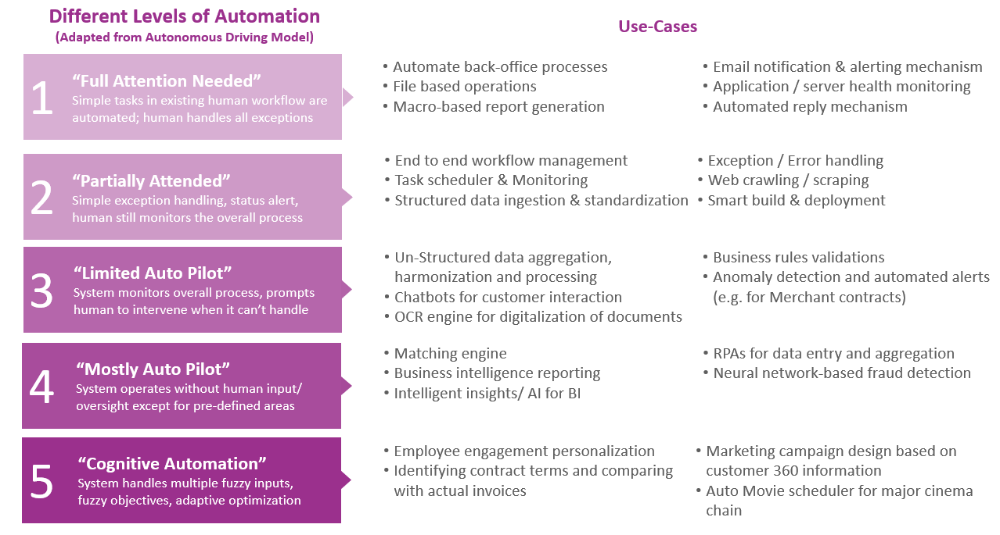

Today, most incumbent organizations across industries are grappling with the risks of digital disruption on
one hand, even as they reach for its opportunities on the other. Most are responding by committing to the idea
of digital transformation The winners in this race are going to be the ones who are able to achieve scale,
recognize and respond to market disruptions, while also dealing with real-world constrictions.
Creating Business Impact by enabling Advanced analytics and Intelligent Automation
Our recent research on digital disruption shows that these organizations are powering this transformation with
Artificial Intelligence (AI) and by leveraging Analytics, Machine Learning, Robotic Process Automation (RPA)
and AI to transform themselves into a data driven intelligent enterprise.
Our Core Capability
Developing and implementing advanced AI-enabled automation
We bring together the catalytic forces of advanced machine learning and technology, along with subject matter
expertise and executional capabilities, to progressively transform organizations and unlock enormous financial
and business value.
Our AI and Automation Services team is partnering with clients to Navigate their Next on this journey through:
-
AI and automation consulting across evaluation and AI maturity assessment, CoE setup, use case
discovery, creating a business case and facilitating change management
-
Delivering value at scale by setting up an automation ecosystem, bringing in operational excellence,
RPA and chatbot factory models, to implementing use cases
- Custom AI platform build for clients to enable democratization of AI and scale adoption
- Bringing pre-built cognitive solutions like Image Detection, Sentiment Analysis, Image Analytics,
Chatbot frameworks, a comprehensive HR solution and other apps to work for you
Automation of business processes through technology, allowing businesses to optimize operations, reduce costs,
and improve productivity.
OUR APPROACH
4-step technology agnostic approach to automation focuses on ensuring metrics improvement, savings, and ROI.
1. Identify Repetitive Tasks
- Understand business workflow and identify repetitive tasks.
- Consult key stakeholders and actual process users
2. Define Business Goals
- Define business goals using the current process as the benchmark.
- Target to improve the throughput, reduce cycle time and optimize resource utilization.
3. Develop Automation Solution
- Choose the right software that is an ideal fit for the organization.
- Develop, test, and deploy the solution.
4. Feedback Loop
- Continuous monitoring and measurement of automated workflow.
- Continuous assessment and upgradation
Niche Capabilities and Cutting-Edge Solutions
ArkEdge’s Automation Suite has delivered significant impact to customers across all major industries and
geographies.
-
Workflow Management: End to end process execution just by one single click
execution mechanism, reducing manual operations by 35-40%
-
DevOps: 40 - 50% faster releases and deployments via our agile approach,
maintaining consistency across multiple deployments and release cycles
-
Web Crawling Bots: Our generic scrapping engine crawls multiple sources,
leading to significant rise in data fill rate and model accuracy
-
Robotics Process Automation: Automated labor-intensive and error-prone
back tasks which are highly rule based in nature, achieving 15-20% time savings
Design Principles
FUTURE PROOF DELIVERY
- Technology independence: best-in-class via open source or industry platforms
- Agility across tech value chain: accelerated emerging tech adoption
- Flexible delivery model: Serverless, cloud or on-prem
SCALABLE & RAPID DEPLOYMENT
- Efficient development: Agile approach focused upon code reusability
- Plug-n-play design: Modularized components for easy utilization across use cases
- Pre-built connectors: Quick and seamless integration across systems and analytics solutions
AI ENABLED & SECURE
- Adaptive real time intelligence: AI models infused with real-time data
- Visualizations: Responsive user interface, supported by multiple devices
- Enterprise grade security: Credential vaults with audit trail for user management
Our Use Cases with Automation Levels
• LEVEL 1: Full Attention Needed: Simple tasks in existing human workflow are automated; human handles all
exceptions
- Automated chatbot for policy related queries
- OCR engine for digitizing hard copy documents
• LEVEL 2: Partially Attended: Simple exception handling, status alert, human still monitors the overall
process
- Anomaly detection and automated alerts (e.g. for Merchant contracts)
- RPAs for data entry and aggregation across systems (e.g. POs in Ariba)
• LEVEL 3: Limited Auto Pilot: System monitors overall process, prompts human to intervene when it can’t
handle
- Finance budget consolidation and forecasting
- Audit process automation
• LEVEL 4: Mostly Auto Pilot: System operates without human input/ oversight except for pre-defined areas
- Employee engagement personalization
- Marketing campaign design based on customer 360 information
- Help Desk Ticket Automation
• LEVEL 5: Cognitive Automation: System handles multiple fuzzy inputs, fuzzy objectives, adaptive optimization
- Automating Cinema Showtime Scheduling
- Automated Portfolio Tracking & Valuation Tool
- Automated Data ETL for Card Issuer

SCALE PROCESSES, NOT TASKS
SIMPLY EASIER
RPA TYPICAL BUSINESS PROCESSES
RPA can learn from people, eventually taking over the processes that humans once completed, at a much faster
pace.
{{item.title}}
{{item.description}}
Our experience with enterprise automation